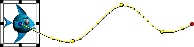
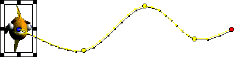

Using Director > Animation > Switching a sprite's cast members
Using Director > Animation > Switching a sprite's cast members |
Switching a sprite's cast members
To show different content while maintaining all other sprite properties, you exchange the cast member assigned to a sprite. This technique is useful when you've tweened a sprite and you decide to use a different cast member. When you exchange the cast member, the tweening path stays the same.
To exchange cast members in the Score:
1 |
To change a cast member in every frame, select an entire sprite. To change a cast member only in certain frames, select part of a sprite. |
To select part of a sprite, press Alt and click the first frame that you want to select. Then press Control-Alt (Windows) or Option-Alt (Macintosh) and click each additional frame that you want to select. |
|
2 |
Open the Cast window and select the cast member you want to use next in the animation. |
3 |
Choose Edit > Exchange Cast Members. |
If you selected an entire sprite, Director replaces the cast member for the entire sprite.

Before cast members are exchanged, the sprite moves like this.

After cast members are exchanged, the sprite still moves in the same way, but it displays a different cast member.
You can also use Lingo to switch the cast member assigned to a sprite. See Assigning a cast member to a sprite with Lingo.